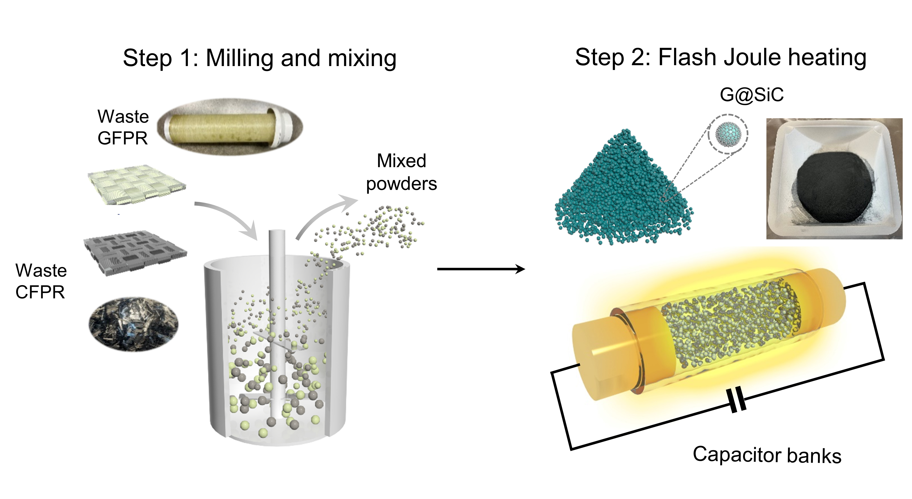

Our research group operates at the intersection of materials science, chemistry, and environmental engineering,
with a particular focus on Flash Joule Heating (FJH) and related extreme-condition synthesis technologies.
We investigate transformation mechanisms that emerge under extreme and transient electrothermal conditions,
aiming to develop efficient, sustainable, and scalable strategies for solid-waste valorization and functional-material
synthesis, thereby contributing to resource security and environmental sustainability.
1. Waste upcycling and resource circularity
We develop electrothermal-driven, rapid, non-equilibrium conversion pathways that transform solid wastes into
high-value functional materials and enable efficient recovery of critical elements. Representative studies span
the electrothermal upcycling of waste plastics and composites (Nat. Sustain., 2024, 7, 452–462;
Nat. Chem. Eng., 2025, 2, 405–406) and electrothermal approaches for battery-metal recovery and direct rejuvenation
(Energy Environ. Sci., 2025, 18, 608–6093; Nat. Commun., 2024, 15, 6250).
We develop electrothermal-driven, rapid conversion pathways that leverage transient extreme conditions to access
kinetically favored transformations, enabling the conversion of wastes into value-added functional materials and the
efficient recovery of critical elements. Representative studies include the electrothermal upcycling of waste plastics
and composites (Nat. Sustain., 2024, 7, 452–462; Nat. Chem. Eng., 2025, 2, 405–406), and electrothermal strategies for
battery-metal recovery and electrode rejuvenation (Energy Environ. Sci., 2025, 18, 608–6093; Nat. Commun., 2024, 15, 6250).

Electrothermal pollutant destruction and resource valorization.
2. Environmental remediation and pollutant valorization
We integrate pollutant destruction with resource recovery under the transient electrothermal condition.
Our work demonstrates the rapid degradation and mineralization of persistent contaminants in soils and solid matrices
(Nat. Commun., 2023, 14, 6371; Nat. Commun., 2024, 15, 6117), and the utilization and upcycling of fluorine resources
from fluorine-containing pollutants (Nat. Water, 2026, in press). Together, these studies establish new paradigms that
couple environmental remediation with circular resource utilization.
Electrothermal waste upcycling and critical-resource recovery.
3. Non-equilibrium electrothermal synthesis of Nanomaterials
We develop rapid and controllable electrothermal synthesis routes for functional nanomaterials, where non-equilibrium
conditions enable access to metastable structures and unconventional growth pathways. Representative contributions
include the controlled synthesis of graphene and nanocarbon materials (J. Am. Chem. Soc., 2022, 144, 15562–15568;
Adv. Funct. Mater., 2022, 32, 210349; ACS Nano, 2020, 14, 5938–5945; ACS Nano, 2025, 19, 38942–38953), two-dimensional
heterostructures (J. Am. Chem. Soc., 2025, 147, 33735–33742), and one-dimensional nanowires and nanotubes
(Matter, 2026, in press; ACS Nano, 2025, 19, 24904–24911).
Non-equilibrium electrothermal synthesis of functional nanomaterials.